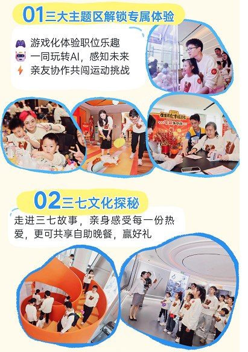

作品文档阅读版 · 何静瑶 Katie
下载原始文档【KOL合作Brief】周六玩心开放日探厂Vlog
【线下打卡时间】8月29日（周六）17:00-18:30左右
【脚本提交时间】8月28日17点前
【成片时间】9月3日
【结款时间】一月内
【拍摄说明】完成约定素材拍摄后可自行离场；自助晚餐可按个人安排选择体验
核心一句话：在三七互娱文化、AI科技与玩心体验中，看见一家“会玩、也认真创新”的游戏企业，并在结尾自然带出三七互娱2027秋季校园招聘。
一、内容发布要求
内容形式：Vlog打卡视频，建议1-3分钟左右。
建议基调：真实、轻松、有体验感；从KOL第一视角出发，减少硬介绍，多呈现现场感受与互动反应。
必带核心元素
要点｜三七互娱品牌标识、全球总部或文化展厅环境。
要点｜三七文化探秘：通过展厅参观，带观众了解三七故事与“玩心”文化。
要点｜AI趣味互动：亲自体验现场AI项目，并结合体验讲述三七如何把AI用于游戏研发、发行、运营及日常工作。
要点｜开放日氛围：员工带亲友参与活动，呈现游戏化体验、亲友互动与轻松有活力的现场感。
要点｜秋招软性植入：由“在这里工作是什么体验”或“谁在做这些有趣的AI项目”自然过渡，不单独制作招聘宣讲段落。
内容逻辑：探访游戏大厂 → 参观文化展厅 → 上手体验AI → 感受三七“玩心” → 可选记录自助晚餐 → 自然带出2027秋招
建议话题：#秋招有路子 #2027校招 #三七互娱招聘 #三七互娱
二、活动核心背景
1. 活动定位
“玩心开放日”是三七面向员工亲友开放的家庭日体验。活动希望让亲友走进真实工作环境，通过游戏化闯关、文化展厅寻宝、AI互动和亲友挑战，理解游戏的岗位乐趣，也感受三七对科技、创造与快乐工作的持续投入。
2. 三大主题体验
游戏化体验岗位乐趣：用轻量互动理解不同岗位与协作方式。
一同玩转AI、感知未来：把抽象的AI能力变成亲友都能参与的趣味体验。
运动挑战：通过共同完成任务，放大陪伴、默契与快乐能量。

活动内容参考（以现场实际安排为准）
三、打卡核心亮点 & 必拍内容
1. 三七文化探秘
要点｜总部外观、三七互娱Logo、进入展厅的第一视角。
要点｜展厅代表性展项、游戏产品或企业发展内容，以及KOL边走边看的真实反应。
要点｜可用自己的语言总结：这里不仅展示游戏产品，也能看到三七如何把“玩心”变成持续创造的企业文化。
2. AI趣味互动
要点｜完整记录一次AI体验：开始操作、生成或互动过程、结果展示和现场反应。
要点｜拍摄AI活动空间与亲友共同体验的画面，突出AI并非遥远概念，而是能被普通人直接感知的工具。
要点｜结合现场官方介绍，简要提及三七正在推动AI进入游戏研发、内容生产、发行运营和办公协作。
口播参考：“原来游戏公司的AI不只会画图，它已经走进研发、发行和运营一线。今天把这些能力做成亲友也能玩的互动，科技感有了，玩心也没丢。”
秋招衔接口播：“体验完这些AI项目，我更好奇真正把它们做出来的是哪些岗位。刚好三七2027秋招已经启动，技术开发、游戏策划、美术和运营等方向都有机会。”
3. 玩心开放日氛围｜补充素材
要点｜可选择体验1-2项游戏化或亲友挑战，记录闯关、协作、笑场和完成任务的瞬间。
要点｜适量捕捉家庭日环境、员工与亲友互动、活动装置和现场细节，增强Vlog的生活感。
口播参考：“这里没有把家庭日做成单纯参观，而是让大家真的参与进来。会玩、敢试、一起完成挑战，这大概就是三七的‘玩心’吧。”
4. 自助晚餐｜自选
如时间合适，可拍摄取餐、餐区环境或简单用餐片段，作为Vlog轻松收尾
5. 2027秋招软性植入｜建议放在视频后段，控制10-15秒
开放日仍是内容主线。建议在完成展厅和AI体验后，从“这样的公司由什么样的年轻人一起创造”切入秋招，用一段简短口播完成信息传递，不展示或嵌入秋招系列长图。
可讲信息：面向2027届毕业生，即毕业时间为2026年9月至2027年8月的同学；工作地点覆盖广州、北京、上海。
岗位方向：游戏运营、技术开发、美术设计、游戏研发、游戏策划、市场推广及职能管理等，包含AI算法工程师、AI平台开发工程师等AI相关岗位。具体岗位以校招官网为准。
投递方式：关注“三七互娱招聘”公众号，点击“我要加入—校园招聘”；或登录三七互娱招聘官网投递。
完整口播参考：“如果屏幕前正好有2027届同学，三七互娱秋招已经启动，岗位覆盖运营、技术、策划、美术和市场等方向，广州、北京、上海都有机会。想把玩心变成职业，可以关注‘三七互娱招聘’公众号，进入‘我要加入—校园招聘’了解。”
四、建议拍摄流程（17:00-18:30）
17:00-17:10｜抵达与开场：总部外观、Logo、签到或入场氛围，抛出“周六来游戏大厂参加家庭日是什么体验”的问题。
17:10-17:30｜文化展厅：参观三七故事与代表性展项，完成文化探秘相关素材。
17:30-18:00｜AI互动：重点体验并记录完整流程，补充三七AI科技与业务应用口播。
18:00-18:15｜玩心体验：选择游戏化或亲友挑战补充互动镜头。
18:15-18:25｜收尾与秋招植入：用“想和这些有趣的人一起创造”承接2027秋招，完成10-15秒简短口播。
18:25-18:30｜补拍与离场：如有需要，可拍摄自助晚餐；完成约定素材即可结束行程。
五、选题方向参考（仅供参考，鼓励自由发挥）
选题方向一：【探厂 / 大厂生活类】《周六带家人去游戏公司，是种什么体验？》
核心逻辑：以家庭日Vlog为主线，用展厅、AI互动和亲友体验建立“好会玩的游戏公司”印象，再用“如果你也想加入这样的团队”自然带出2027秋招。
选题方向二：【AI / 科技体验类】《游戏公司的AI，已经能让全家一起玩了？》
核心逻辑：从一次具体AI互动切入，讲清三七把AI放进真实业务与日常体验，并顺势提及AI算法、AI平台开发等校招岗位，让招聘信息成为体验后的自然延伸。
六、拍摄与表达注意事项
要点｜未经允许，不近距离拍摄员工、亲友及未成年人正脸；涉及儿童画面须确认监护人同意。
要点｜不拍摄电脑屏幕、门禁信息、内部文件、未公开产品、数据看板及其他保密区域。
要点｜关于三七AI能力的描述以现场官方讲解和已公开信息为准，不自行延伸模型参数、业务数据或效果承诺。
要点｜秋招植入控制在10-15秒，避免逐项念岗位和流程；重点说清2027届、岗位方向、工作城市与官方投递入口。
要点｜秋招信息以校招官网最新发布为准；不承诺录用结果，不将“绿色通道”“免笔试/AI面试”表述为所有候选人均可享受。
要点｜秋招系列图片仅供KOL理解信息，不嵌入Brief，也不要求在Vlog画面中展示。
要点｜内容重点放在“文化展厅 + AI体验 + 玩心氛围”，自助晚餐只作可选生活化素材，避免喧宾夺主。
要点｜现场流程可能根据实际情况微调，请配合工作人员引导，并预留少量补拍时间。